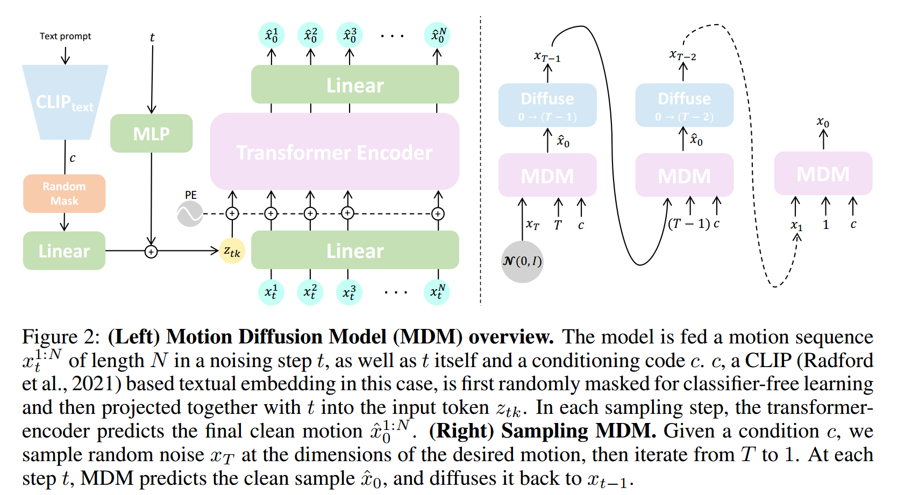
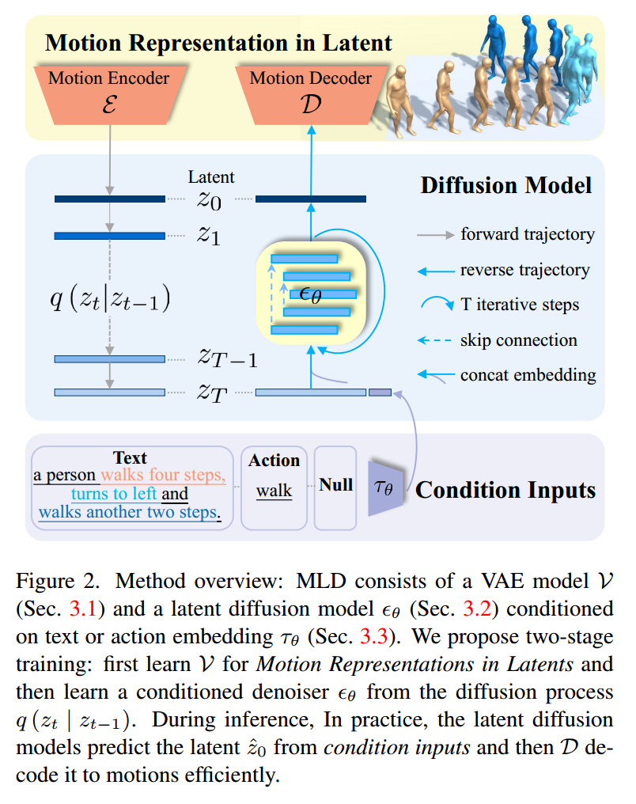
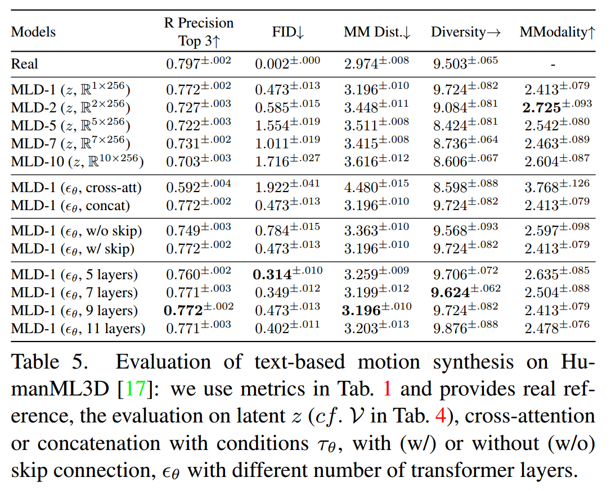
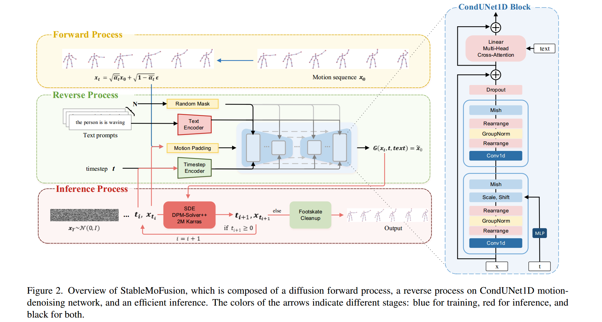
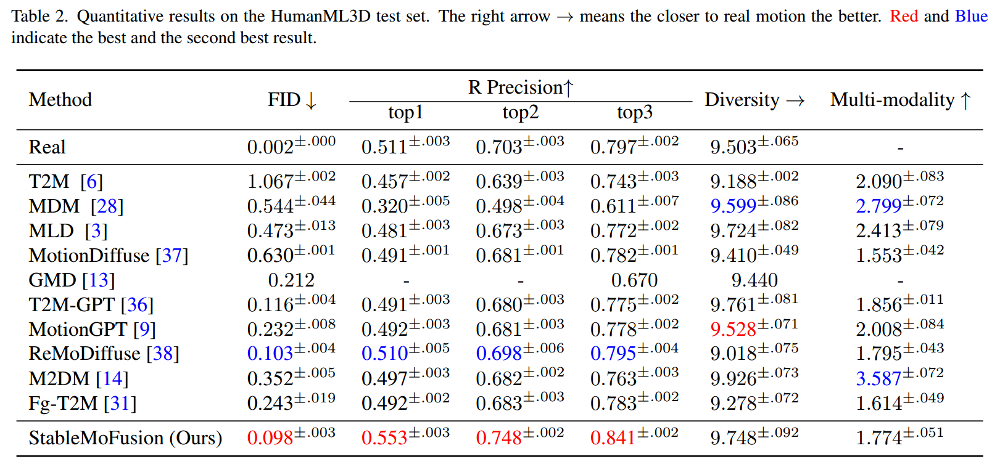

鉴于Diffusion model在图形图像生成方面获得的巨大成功，将其应用在动作生成方面的选择并不会令人感到惊讶。网络上对于这方面的讨论似乎并不多(虽然关于Motion方向本身的讨论感觉就不是很多), 而我最近也在参与一个相关方向的项目，所以在这里概括性的介绍一下现阶段Motion Diffusion相关的研究以及尚且存在的问题。
Human Motion Diffusion Model(MDM)
这篇论文是最早直接使用Diffusion Model进行Human Motion生成的工作之一，也是ICLR203的top25%文章，之后的绝大部分工作也是建立在该文章的框架上进行的。其通过对原始transformer-based Diffusion Model进行针对Motion的相应调整，来完成text-to-motion，action-to-motion以及edit motion等任务。
MDM overview
模型整体采用transformer-based架构，而非传统的Unet框架(之后的工作大部分换回了Unet)，通过CLIP提取text输入的特征，MLP编码时间t，这一部分和传统的Diffusion并没有本质上的区别
为了能够应用geometric loss, MDM并不预测加噪过程中的噪声，而是直接预测还原的结果，从而能够在训练过程中施加geometric loss，比如foot skating loss，velocity loss等，来提升生成内容质量。这也是动作生成和图像的一个不同点，动作的关节空间存在严格的链式依赖关系，并且动作生成对精度要求高，噪声敏感, 对某个关节的轻微扰动很容易导致整体的动作变形，产生如滑步，抖动之类的问题，因此需要施加额外的约束。针对动作生成质量的讨论可以参考Daniel Holden大佬的一篇blog
类似于Diffusion在图像上的inpainting操作，MDM同样可以通过在时域上进行补齐进行Motion-in-between。并且可以通过替换每次迭代过程中$\hat{x}_0$中对应的关节部分来实现对特定部分骨骼的编辑
在HumanML3d以及KIT上进行实验，证明MDM相比之前的动作生成算法有显著的效果提升。
从实验结果可以看出，相比之前的方法，MDM无论是在生成动作的质量还是表达的多样性上都有了显著的提升，证明了Diffusion Model在动作生成上的优越性，并且证明能够完成text2-motion，action2motion等任务，但同时该方法也存在训练以及推理耗时长，模型难以扩展等问题。
Executing your Commands via Motion Diffusion in Latent Space(MLD)
MLD针对MDM等是直接使用原始动捕数据的Diffusion模型上进行了改进，即在大量无标签的动捕数据上训练一个autoencoder，将原始动捕数据映射到latent空间，然后利用Diffusion model在latent空间上去拟合数据的分布，从而降低原始动捕数据中噪声影响以及对原始数据进行降维，提高学习效率与推理速度。
Motion-Encoder和Motion-Decoder是与训练的VAE网络，采用类似Unet的long-skip连接，每个模块采用transformer-based结构设计，预先在大量无标签动捕数据上进行训练，获得具有高表达能力的动作编码器，映射到latent空间
Diffusion模型采用transformer-based结构，基本就是在Motion-Encoder的SkipTransformerEncoderLayer的基础上在前面加上另一个TransformerEncoderLayer和一个LayerNorm。特殊的地方在于MLD通过在0维度上将sample数据和text的embedding数据做concate，从而实现条件的输入。文章中提出结合text_embedding的方式有直接concate与cross-attention两种方式，并通过ablation实验结果证明concate的效果更好
MLD通过在latent空间上压缩数据从而降低Diffusion模型需要学习的参数量，提高整体的训练与推理效率。
MLD的模式能够更好的利用无标签的数据，获得更好的motion feature encoding。个人认为这是MLD非常重要的一个性质，因为本身有标签的motion数据量相比image要少得多，并且不同的数据集之间分布差距也很明显，容易使得Diffusion Model在单个数据集上”过拟合”。这种更好利用unlabel data的方法也为之后在zero-shot上进行尝试的研究提供很好的借鉴。
StableMoFusion: Towards Robust and Efficient Diffusion-based Motion
前面两篇工作都使用了transformer-based的架构来实现各自的模型，无论是VAE还是Denoiser，而2024年的这篇工作则意外的没有使用transformer，而是使用了更为简单的Cross Attention进行模型架构的设计，并在Metrics层面获得了更好的效果
整体的训练思路仍然是传统的Diffusion模式，但是Unet结构明显发生了变化，相比于MLD使用的transformer作为encoder，这里使用了1维卷积，保留较为完整的时序。同时在对于text和sample进行结合的选择上则使用了cross attention来实现。这种结构上的变化获得了惊人的效果
stablemofusion-exp.png

该文章中还是用了非常多的trick，比如：
GroupNorm Tweak ：在group normalization之前和之后交换数据的维度，来最小化动作补齐对前向推理的影响
Exponential Moving Average：计算一段模型参数的加权平均，使最近的数据更新拥有更高的权重，提高模型训练的稳定性
Efficient Sampler：使用SDE DPM-Solver++ 2M减少去噪过程的迭代次数，减低累计误差
Embedded-text Cache：提前计算text embedding，减少同样text在训练过程中的重复计算
Footskate Reduction：设计footskate loss来减少滑步